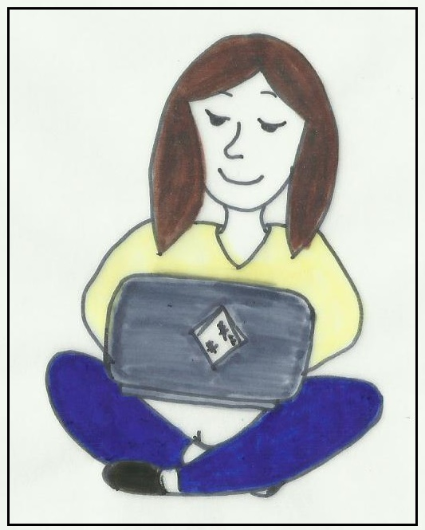

Why do I Aspire to be a Coder?
So why do I want to be a coder? Well, there are many reasons I can think of, but ultimately I get to help people in a really unique and creative way. I get to solve peoples problems by creating websites, apps or even robotics. These can all be used to improve peoples lives, even in just the smallest and simplest of ways. What an amazing feeling to be able to give back and contribute to society each and every single day!
Then of course there’s the actual process of coding, which is super fun and exhilarating! You get to take your creative ideas and make them come to life! Okay so it can be frustrating when you get stuck on that one piece of code that you just can’t figure out. But when you take a step back and look at it with a fresh set of eyes, the solution’s normally staring right back at you (or if all else fails, there’s always Google!). It’s like a mini victory each time you solve a coding problem. It’s times like this when I want to say ‘Hey mum, guess what? I’ve finally found something that my stubbornness is actually good for :)’
I get to learn every single day - how awesome is that! Alright so technology changes quickly and I probably will never know it all, but that’s okay because we’re not expected to know everything in this industry - and isn't that a liberating feeling.
And lets not forget about the amazing people you get to surround yourself with each day. You get to work in small teams with like-minded people in a supportive environment. Everyone combining their individual ideas to come up with one creative solution. Having worked in a variety of industries, I can say without a shadow of a doubt, that this is by far one of the friendliest and most welcoming industry I have ever been a part of. Everyone is so supportive and they never hesitate to help those around them.
What better way to spend my days than working in a fulfilling job that I actually love. Where I get to contribute to something bigger than myself and hopefully one day too I get to teach others so they can discover the wonderful world of coding as well!